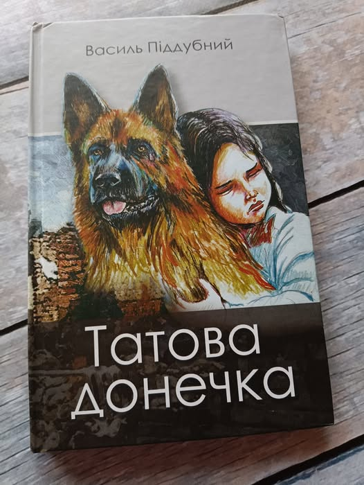
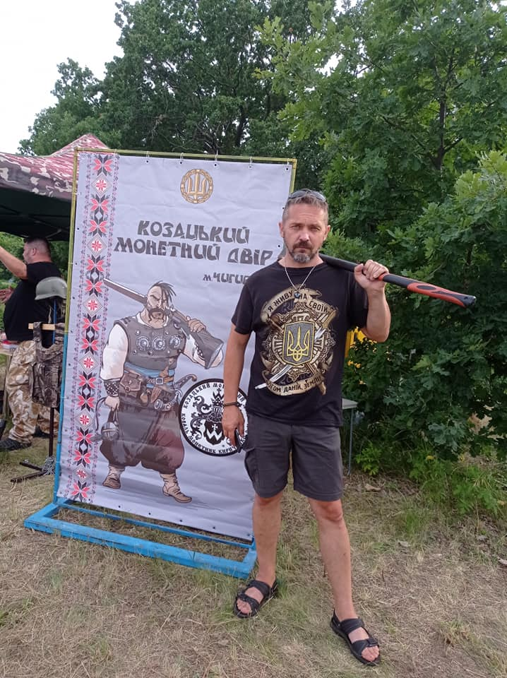
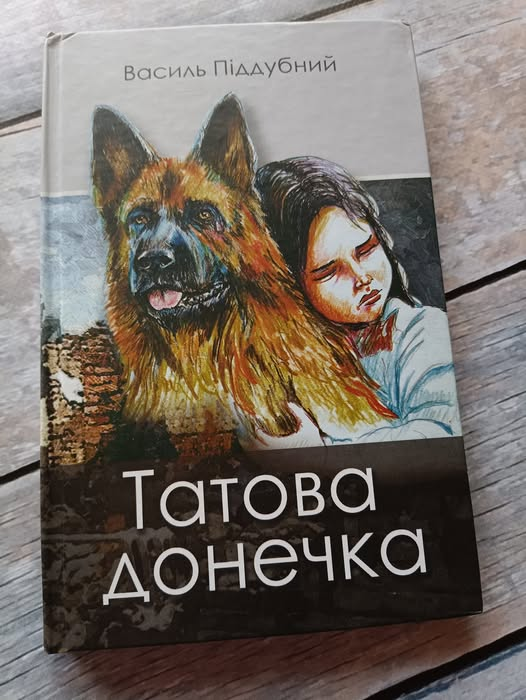
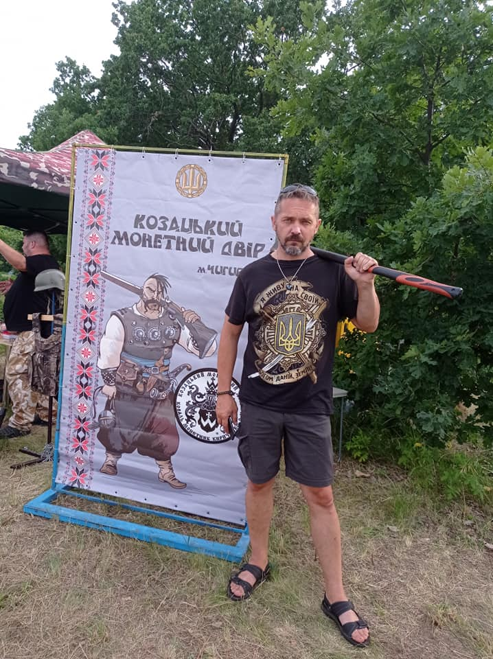

Василь Піддубний – доброволець, ветеран, художник, мандрівник та автор книг “Піастри, піастри...” (під псевдо Стівен Робертс), “Холодне серце. Повість-казка козацьких часів”, “Словник солдатського сленгу своїми словами”, "Козацькі байки", "Історії" співавтор збірки “Голос війни. Історії ветеранів”, кількох збірок поезії, організатор тритомної збірки оповідань “Слово про війну” та інших.
“Я не проходив строкову службу, але з першою хвилею мобілізації подався добровольцем. Потрапив до 10-го батальйону територіальної оборони Житомирщини.
Коли 30-ту бригаду було розбито під селами Степанівка та Маринівка, то наш 10-й батальйон відправився прикрити їх відхід та прийняти їх в штабі бригади. Саме тоді я вперше побачив, що таке війна: поранені хлопці, багато стрілянини. Стріляли повсюди.
Проте така невтішна ситуація не зупиняла, і вже в серпні 2014 року 16 із 78 військових із мого батальйону, потайки згуртувавшись, написали рапорти з вимогою до командира, аби відправив нас у зону бойових дій. Далі я був снайпером, тому що одиночними у мене вдавалося добре стріляти в мішені”, – пригадує ветеран.
У квітня 2016 року Василь був демобілізований, та восени того ж року знову поривався на схід, проте на цей раз лікарів обійти не вдалося, але ветерану вдалося записатися в запас 4-го батальйону тероборони, що означає про його готовність у будь-який момент знову стати на захист України зі зброєю в руках.
Після повернення автор говорить, що життя склалося саме так, як мало скластися. Він зробив перший крок, а потім пішов далі.
“Я сам дуже люблю читати книги й завжди мріяв, аби на полиці серед моїх улюблених була і власна книга. Саме коли я повернувся з війни, зрозумів, що пора мрію втілювати в життя. До того я писав лише короткі уривки про козаків та їхнє життя, але потрібно було задуматись над чимось серйозним”, – розповідає ветеран.
Першою книгою, яку видав Василь, стала повість “Піастри, піастри...”, що зовсім не про війну, а, як каже сам автор, розповідає те, що недоговорено в “Острові скарбів”.
“Книг у мене вісім. Про війну – для всіх. Про піратів – для романтиків. Про козаків – для тих, хто любить Україну. Та для тих, хто любить читати зовні прості, а насправді глибокі твори”, – говорить Василь Піддубний.
А які книги читаєте ви?